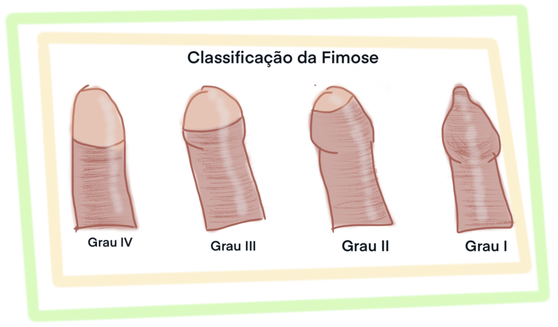

FIMOSE
A fimose é a dificuldade ou impossibilidade de retrair o prepúcio, que nesse caso é muito estreito ou possui uma quantidade excessiva de pele. Desse modo, a higienização do pênis pode ser comprometida, facilitando infecções no local e urinárias, além de possível incômodo e/ou dor durante ereções e relações sexuais, pois a região se torna mais sensível.
A fimose possui 4 graus, e pode ser congênita ou adquirida, que ocorre quando cicatrizações de múltiplos machucados e/ou infeccções na glande e/ou prepúcio levam ao fechamento da abertura prepucial. Boa parte das crianças do sexo masculino nascem com a glande coberta pelo prepúcio, que é retraído gradualmente sem a necessidade de intervenção médida na maioria dos casos.
Pomadas corticoides podem ser utilizadas como tratamento, facilitando a exposição da glânde para a higienização correta. Quando esse tipo de tratamento não funciona ou a situação da fimose é grave, é necessário realizar uma cirurgia para remover o excesso de pele prepucial (postectomia, mais conheida como circunsisão). A fimose também pode ser tratada por meio da prepucioplastia, que consiste na retração total do prepúcio sob anestesia, sendo então realizadas pequenas incisões no excesso de pele, que são fechadas com pontos absorvíveis, assim alargando e encurtando a fimose. Por questões estéticas e, principalmente, financeiras, a prepucioplastia é um procedimento raro no Brasil.
DISFUNÇÃO ERÉTIL
Disfunção erétil é o termo médico para a incapacidade de manter uma ereção satisfatória durante relações sexuais, podendo estar acompanhada de outros transtornos sexuais, como a ejaculação precosse. As causas podem ser orgânicas, como idade avançada, e/ou psicológicas, como ansiedade e depressão. Outros fatores biológicos, como diabetes, hipertensão e doenças cardiovasculares também podem influenciar o quadro de disfunção erétil. Casos de disfunção erétil são comuns em relacionamentos conturbados e/ou em indivíduos com baixa autoestima.
Outros agravadores incluem luto, pressões psicológicas advindas de problemas financeiros e situações de desconforto. De acordo com o Manual Diagnóstico e Estatístico de Transtornos Mentais (DSM-V, 2014), cerca de 20% dos homens receiam ter problemas eréteis na primeira relação sexual, porém, apenas 8% realmente possuem problemas para ter/manter uma ereção satisfatória.
Para o tratamento, é necessarío descobrir se o problema foi subito ou gradual; se a disfunção é permanente ou se ocorre com parceiros(as) e/ou ou situações específicas (após ingerir medicamentos ou após situações de estresse excessivo, por exemplo). Desse modo, é possível diagnosticar corretamente a causa da disfunção erétil e recomendar o tratamento adequado. Porém, é possível evitar problemas sexuais decorrentes de outras doenças evitando o uso excessivo de álcool e sedentarismo.